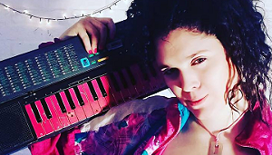
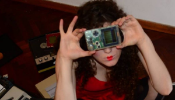
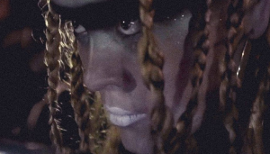
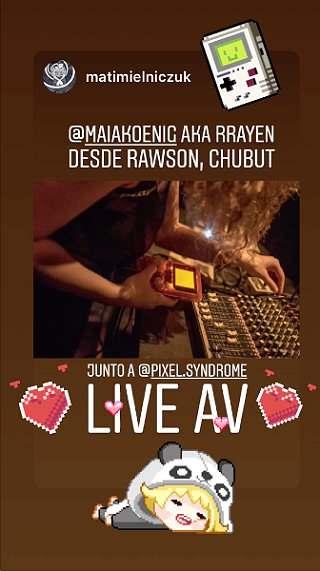
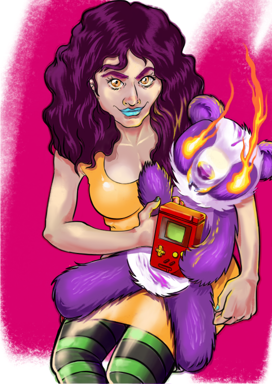

Categoría:
ARTISTAS





Promocional del evento "Experimental y Bailable".
Diciembre 2019
RRayen
RRayen, también llamada Maia Koenig, me contó una vez de su visión para un mundo de música sin fronteras, y me dijo:
Si tuviera que pensar en un futuro ideal, este sería: escribir música como una interpretación de nuestra experiencia de vida, que la escena sea inclusiva y que este abierta a todas las personas del mundo que quieran producir.
De todas las artistas de noise latinoamericanas, creo que RRayen es la que más ruido hizo. Participante asidua de eventos masivos y también exclusivos y oriunda de Trelew, se podría ciertamente decir que los vientos y las sudestadas del sur han dejado una impronta en su arte. Con fuertes influencias punk y de la cultura alternativa, ella trae a todo lo que hace el poder de la performance.
RRayen y yo nos conocimos a través de una presentación que había dado en el Festival Mutek allá por el 2017, con su grupo Feminoise. Fue genial poder hacerle visuales en una de sus últimas presentaciones en Buenos Aires, antes de irse a Europa, dentro del marco de la fiesta 'Experimental y Bailable'. Ella miraba al futuro y consideraba a la música Chiptune como una forma de 'artivism' (activismo artístico), tocando para crear un mensaje en contra de la cultura de la obsolescencia programada, y definitivamente no tiene ninguna de las características definitorias de una persona que toca por nostalgia, sino más bien de alguien que mira hacia el futuro y deconstruye el pasado. Lo que siempre me llevo de ella es su energía cruda que se apropia del escenario, y su presencia electrificante.

Retrato de RRayen por Giselle Llamas.